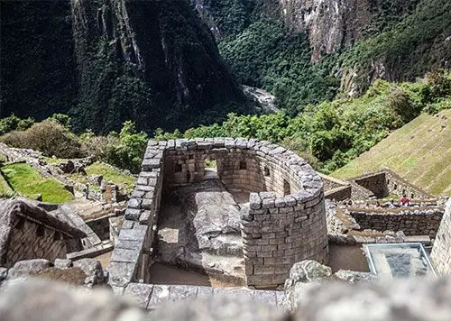
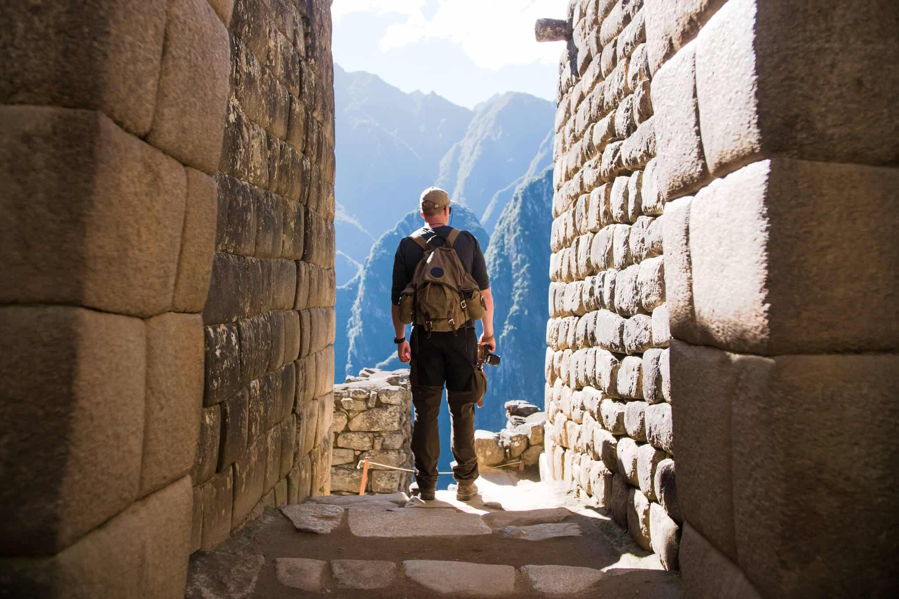
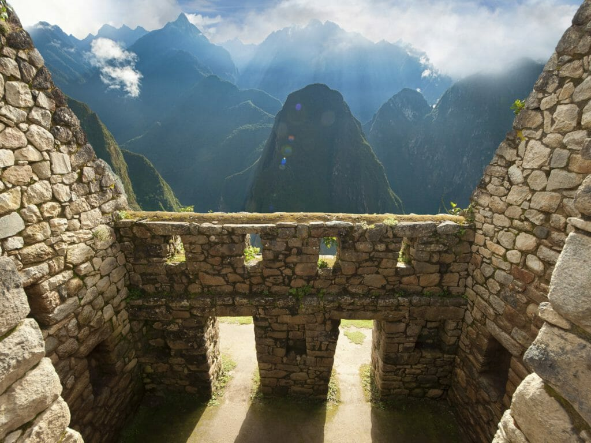

Traveling to Machu Picchu offers a unique blend of history, natural beauty, and cultural significance that few destinations can match. Located high in the Andes Mountains, this ancient city built by the Inca Empire continues to captivate visitors with its mystery and preservation. As you walk through its intricate stone structures, terraces, and temples, you gain insight into the advanced engineering and spiritual life of the Inca people. Its origins remain partly unknown, which only deepens its appeal as both a historical and educational experience.
Beyond its rich history, Machu Picchu is surrounded by some of the most breathtaking landscapes in the world. Perched above the Urubamba River and framed by towering green peaks, the site offers panoramic views that feel almost unreal. Early morning visits often reveal mist rolling through the mountains, creating a dreamlike atmosphere that enhances the sense of discovery.
The journey to Machu Picchu is an adventure in itself, adding another layer of meaning to the experience. Many travelers take on the challenge of hiking the Inca Trail, a multi-day trek that winds through mountains, forests, and ancient ruins before arriving at the site. Others opt for a scenic train ride, which still provides stunning views of the Peruvian countryside. Whether by foot or rail, the anticipation built along the way makes arriving at Machu Picchu even more rewarding and memorable.
Traveling to this iconic destination also allows visitors to immerse themselves in the surrounding culture. Most trips include time in Cusco, once the capital of the Inca Empire, where colonial architecture and indigenous traditions coexist. Exploring local markets, tasting traditional Peruvian dishes, and learning about the customs and the craftsmanship add depth to the journey.
Ultimately, Machu Picchu represents more than just a travel destination; it is a once-in-a-lifetime experience that blends exploration, reflection, and inspiration. The sense of accomplishment from reaching the site, combined with its serene and spiritual atmosphere, leaves a lasting impression on visitors. It stands as one of the world’s most extraordinary “lost cities,” offering scenic landscapes, rich heritage, and meaningful adventure all in one place.

